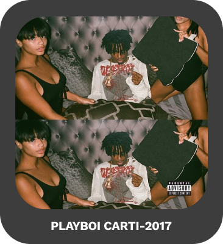
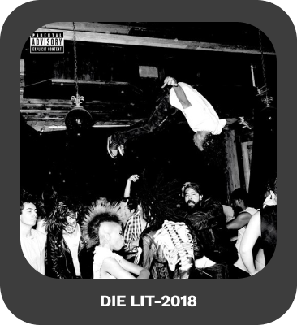
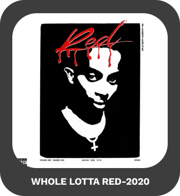

Playboi Carti to amerykański raper i producent muzyczny, który zyskał popularność w latach 2010-tych. Poza muzyką, Playboi Carti był również zaangażowany w wiele pro
jektów modowych, takich jak współpraca z marką Vlone czy kolekcja z zespołem punkowym Misfits. Jego styl ubierania się i wizerunek inspirowane są kulturą punkową i
młodzieżową, co przyciąga uwagę fanów z różnych środowisk. Pomimo kontrowersji wokół niektórych jego tekstów i
wypowiedzi, Playboi Carti ma liczne grono oddanych fanów, którzy cenią jego muzykę i styl życia.. Jego pierwszy mixtape "Young Misfit" został wydany w 2015 roku, a rok później podpisał kontrakt z wytwórnią
Awful Records. W 2017 roku wydał swój debiutancki album "Playboi Carti", który zyskał uznanie krytyków i fanów. Rok później wydał mixtape "Die Lit",
który był jeszcze większym sukcesem komercyjnym. W 2020 roku wydał album "Whole Lotta Red", który zadebiutował na pierwszym miejscu listy Billboard 200.
Playboi Carti jest znany
ze swojego charakterystycznego stylu rapowania oraz współpracy z innymi znanymi artystami, takimi jak Lil Uzi Vert, A$AP Rocky czy Travis Scott.
DYSKOGRAFIA
albumy które wydał playboi carti:



Najpopularniejsze utwory wydane przez playboia cartiego: